Water Connect
November 2017 - December 2017
Team: Selin Insel, Allison Mui, Emily Osborne
USA today quotes 63 million people in the United States were exposed to potentially unsafe water more than once in the past decade. So many people are affected by short term, but frequent water contamination crises. Water Connect, a peer economy platform, leverages the strengths of a community in times of need.
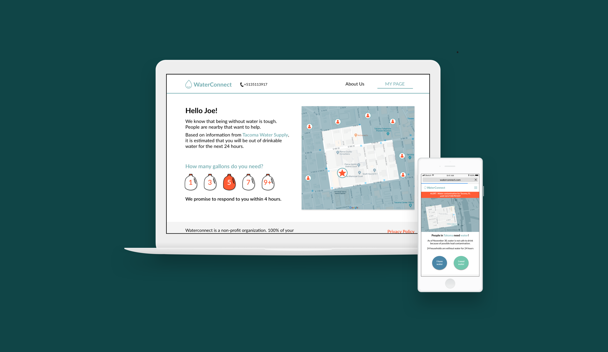
My Role
I was involved in all aspects of this project, from information architecture to final prototyping. However, I was most heavily involved in user research and final designs!
Our Solution
Water Connect is a web application that connects water donors and receivers to create a continuous system of water sharing.
What's the value proposition for the key stakeholders?
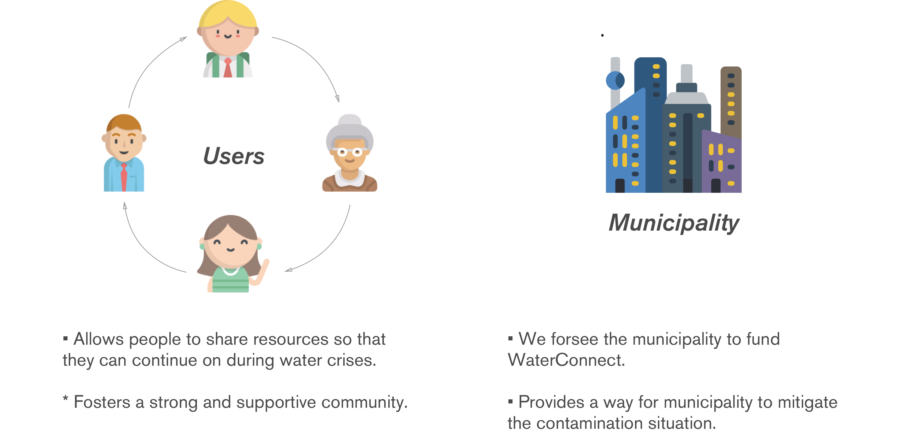
Let's see how WaterConnect would work!
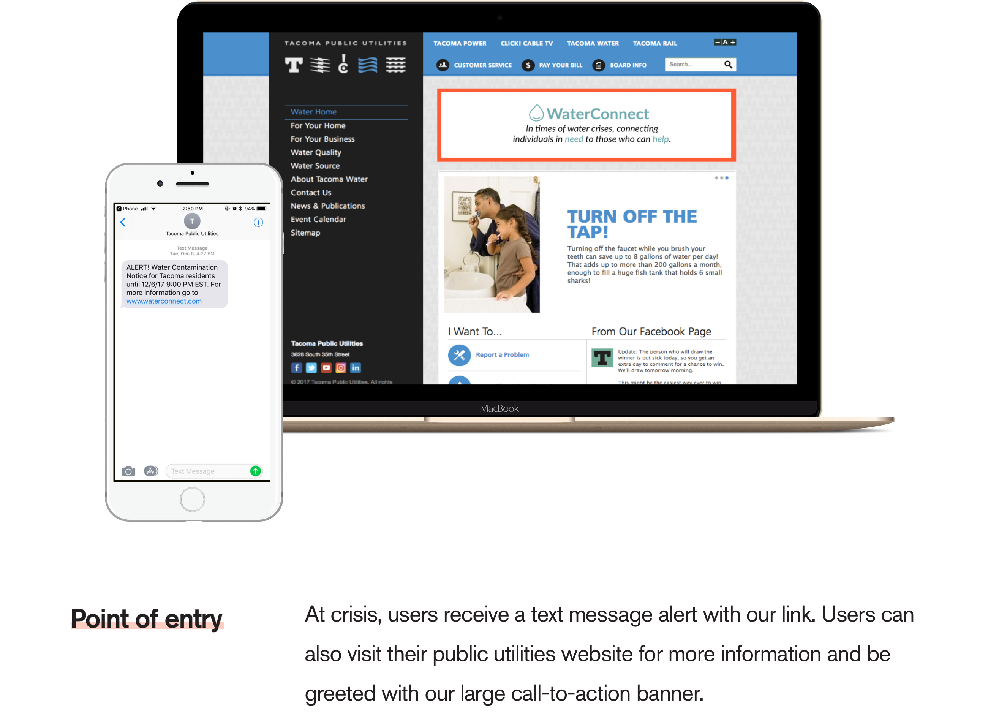
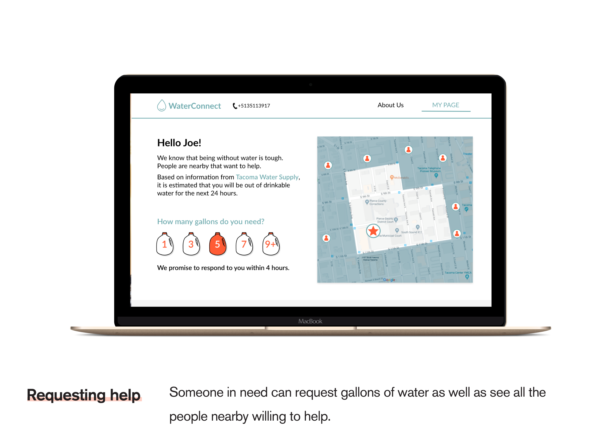
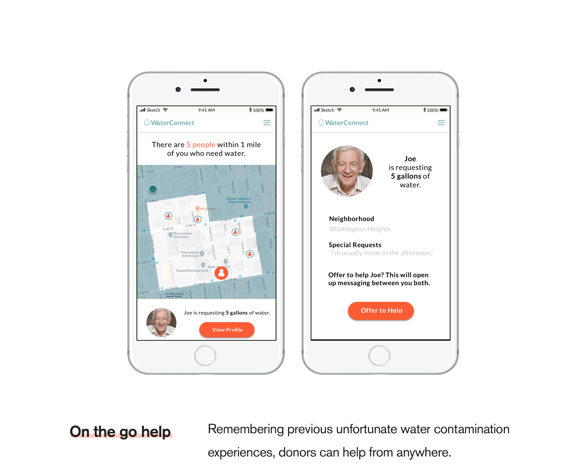
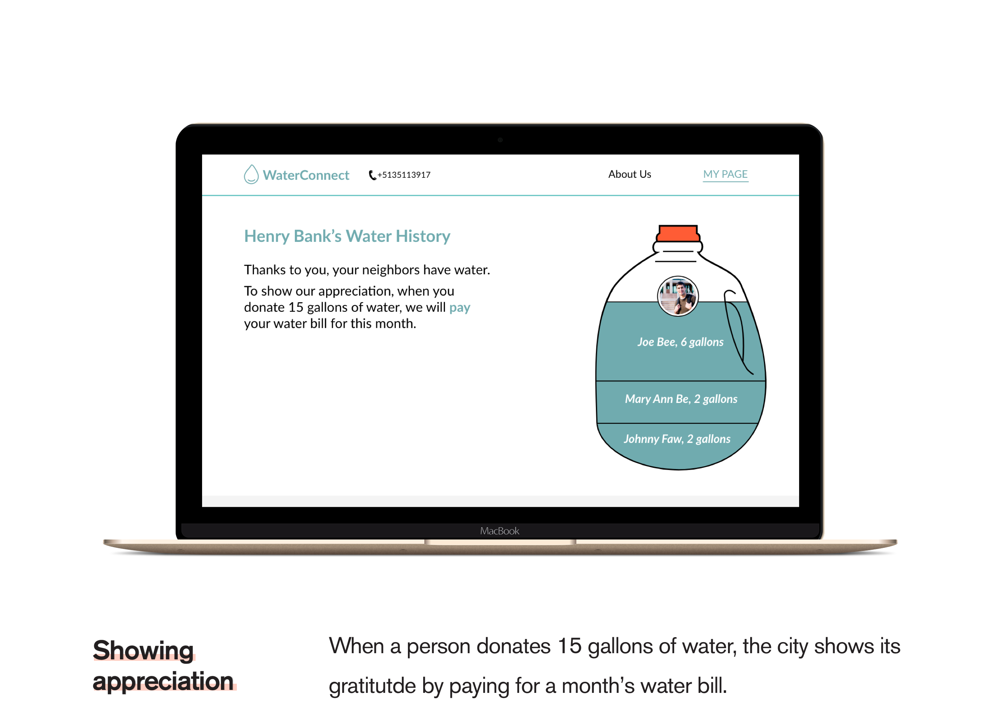
Process Work
Research
Guerilla Research
After we chose water contamination as our problem space, we went out into the field with three main questions:
If your house had contaminated water, what would you need?
If you heard a nearby neighborhood had contaminated water, what would you be willing to share?
What would you expect in return?
Key Insights
People want INFORMATION!
No expectation of monetary or quantifiable compensation.
Concern and slight hesistance about sharing space because of prviacy reasons.
Speed Dating
Moving forward with our insights from guerrilla research and supportive secondary research, we created personas and scenarios that conceptualized our service to speed date.
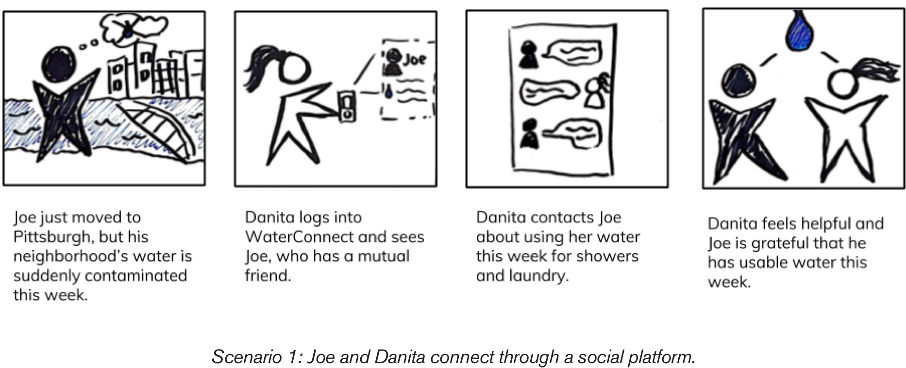
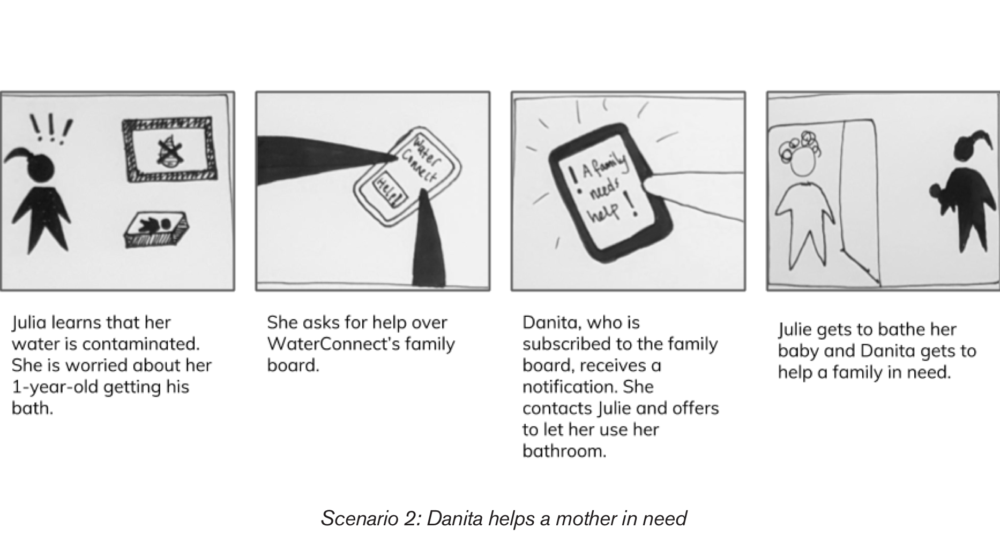
Key Insights
Finalized Scenario
Because our speed dating insights significantly contradicted our findings from guerrilla research, we went back to the drawing board and finalized our personas and scenarios.
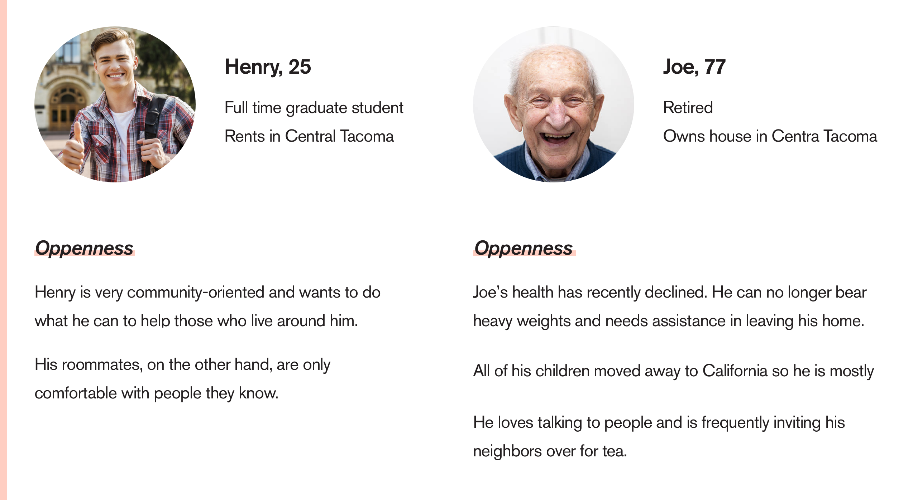
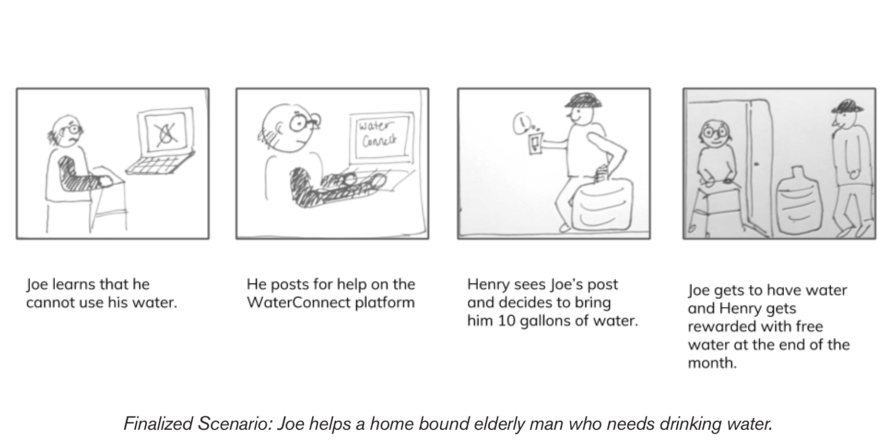
Creating Wireframes
Screen Map
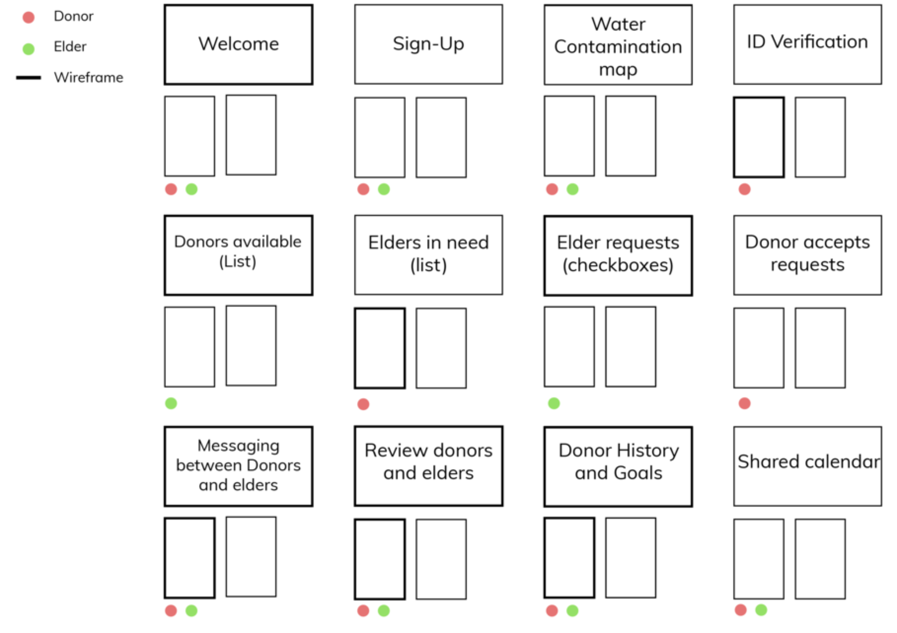
Low Fidelity Wireframes
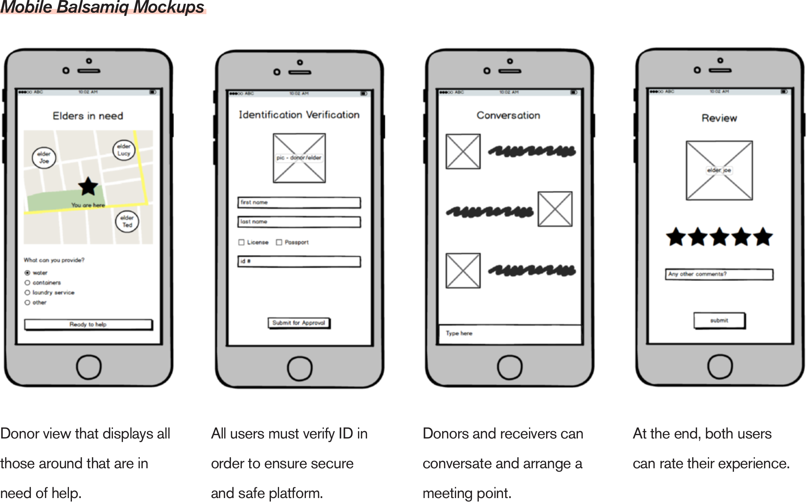
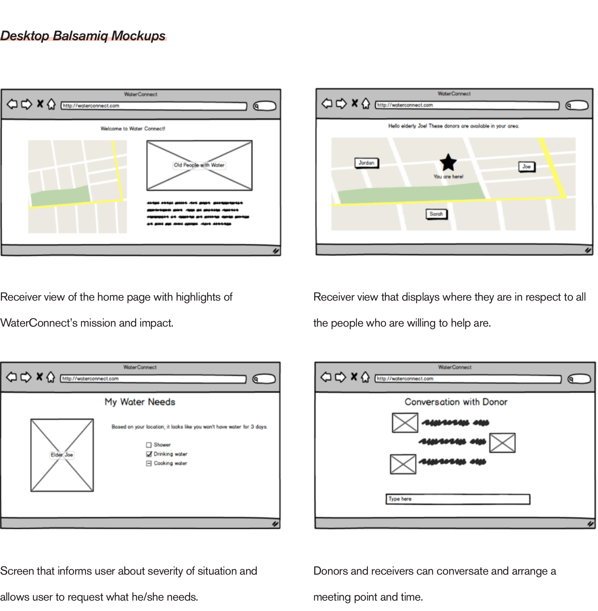
Feedback
Omit ID Verification and ratings to keep aligned with dependency on altruism.
Tell a simple and clear story through screens.
Enter the story from the middle, rather than showing sign-up screens.
Final Prototype
With this feedback in mind, we created high fidelity wireframes and an InVision prototype.
Below is a full experience demo. However, feel free to play around on our mobile prototype here.
Lessons Learned
At first, doing guerilla research was intimidating. It really pushed me out of my comfort zone and forced me to talk to strangers in coffee shops. This project made me a better communicator and taught me that guerilla research could lead to the best and candid insights.
As for visual design, I learned methods to make specific portions of the design pop. I also learned how to effectively design parallel action buttons by using complements of color.